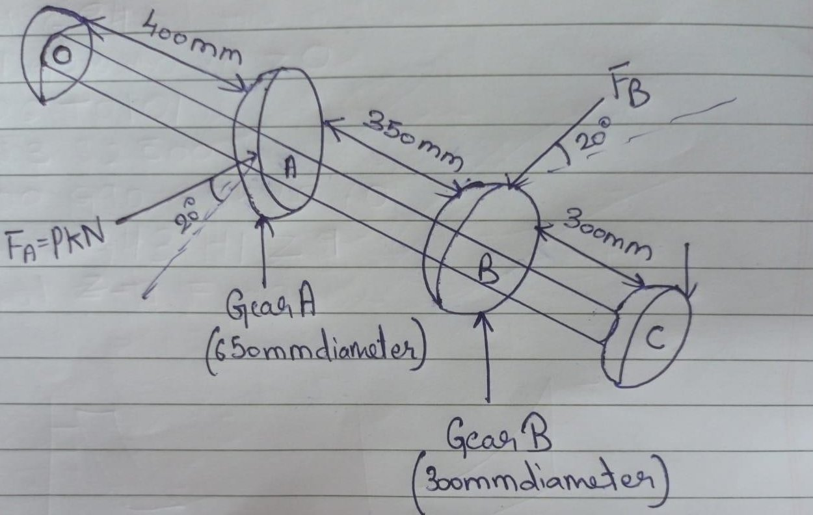
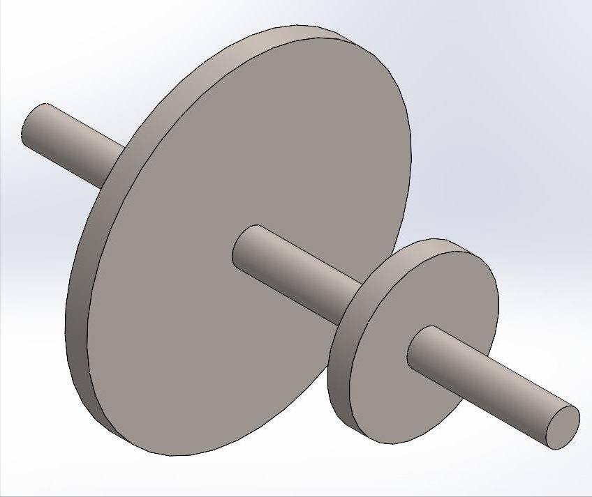
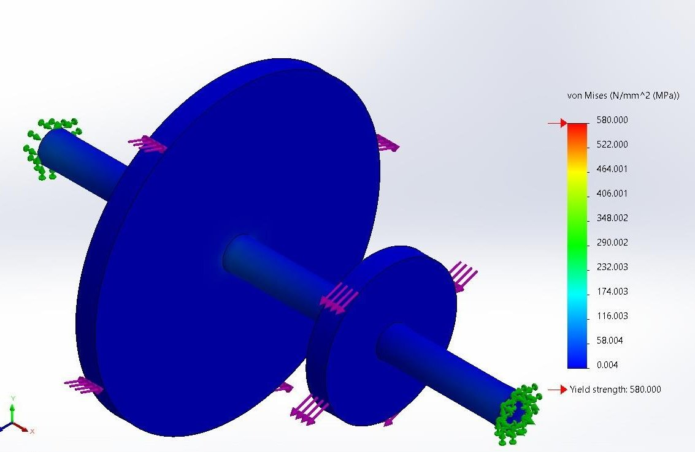
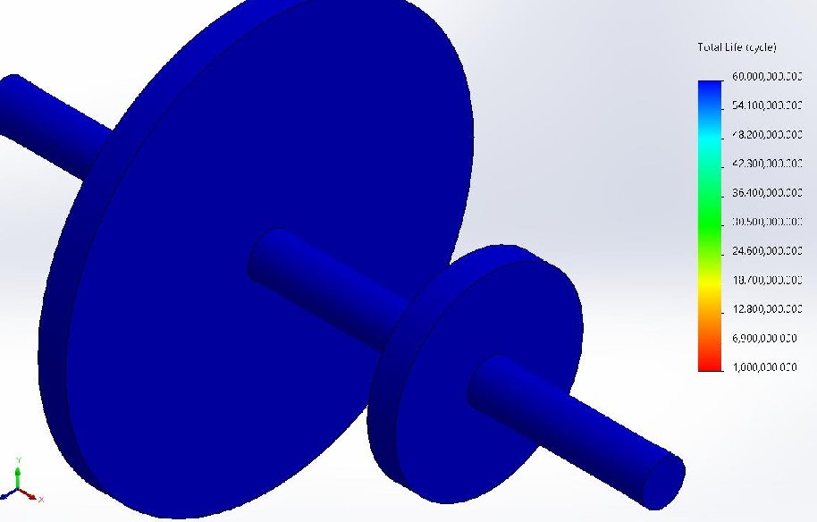
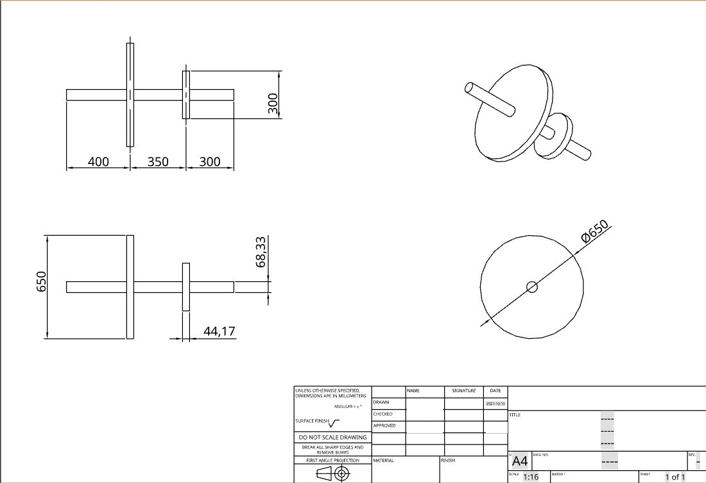

Projects / P.06 · Case study
Shaft Design for Fatigue Loading
A speed-reducer countershaft taken from a free-body sketch to a diameter, by the ASME code, and then checked in FEA. The interesting part is the two places where the number the code hands you is not the number that belongs on the drawing.
- Context
- Machine Design — B.Eng. Mechanical Engineering, Thapar Institute
- Brief
- The countershaft of a speed reducer running at constant speed. Gear A takes power in from a meshing gear, gear B delivers it out. Size the shaft, keys and splines for fatigue loading.
- Method
- ASME code B106.1M · maximum shear stress theory · hand calculation, then FEA as a check
- Tools
- SolidWorks — model, static study, fatigue study, drawing
The load case
Two gears on one shaft between two bearings, 400 mm from bearing O to gear A, 350 mm on to gear B, 300 mm on to bearing C. Gear A is 650 mm across and takes a 18 kN tooth load; gear B is 300 mm and carries the torque back out. Both mesh at a 20° pressure angle, so every tooth load splits into a tangential component that makes torque and a radial one that only bends.

Material is Steel FeE at 770 MPa ultimate, 580 MPa yield. ASME gives two ceilings on shear stress — 30% of yield or 18% of ultimate — and you take the lower, which here is 138.6 MPa. Because the gears are keyed, that comes down another 25%, and 103.95 MPa is what the shaft actually has to live inside.
From free body to diameter
Resolving in both planes and taking moments about O gives the bearing reactions, and from those the bending moment at each gear. Gear A is the worse of the two by a wide margin — it is further from a support and carries six times the tooth load.
| Horizontal (N) | Vertical (N) | |
|---|---|---|
| Reaction at bearing O | 10,089.91 | 3,949.14 |
| Reaction at bearing C | −5,491.21 | 2,691.91 |
| Bending moment at gear A (N·mm) | −4,035,964 | 1,579,896 |
| Bending moment at gear B (N·mm) | −1,647,372 | 897,577 |
The two components at gear A combine to a resultant bending moment of 4.33 kN·m. Feeding that and the 200 N·m torque through the maximum-shear-stress form of the ASME equation, with the code's shock factors of 1.5 on bending and 2.0 on torsion, closes on a diameter of 68.33 mm.

Keys and splines follow from the diameter. A square key at the industrial rule of a quarter of the shaft gives 17.08 mm square; eight splines over a hub 1.25 diameters long, at 6.5 N/mm² permissible pressure, give a 65.64 mm root against the 68.33 mm outside.
Checked, not just calculated
The hand calculation gives a diameter. It doesn't tell you where the stress actually concentrates, so the model went into a static study and then a fatigue study.



What I'd do differently
- 68.33 mm is a calculation, not a shaft. It went onto the drawing as-is. Nobody turns a 68.33 mm shaft — it should have been rounded up to the nearest standard size, 70 mm, and the margin recalculated at that size. Carrying two decimals of false precision onto a production drawing is the kind of thing a checker sends straight back.
- The 5 mm key length is wrong, and the arithmetic isn't. Solving the shear equation for length gives 5 mm, and that is genuinely what the equation says. It's still wrong, because key length is set by the hub it sits in, not by shear — a 68 mm shaft carries a hub of roughly 100 mm, and the key runs most of that. The right conclusion was that shear is not the binding constraint here, and I drew the opposite one.
- The torque was assumed, not derived. 200 N·m was taken as a starting value rather than worked back from a transmitted power and the running speed. Every number downstream — the diameter, the key, the splines — inherits that assumption, and the brief gave enough to do better.
- No tolerances. The brief asked for them and the drawing doesn't carry any. A shaft with gears, bearings and splines on it needs fits called out at each seat; without them the drawing isn't manufacturable.